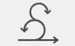

Luna
- Especie
- Perro
- Descripción
- Mediana, pelaje claro y collar rojo.
- Zona
- Plaza del barrio
Red vecinal de ayuda
Información clara para ayudar a que vuelvan a casa.
Ayudanos a difundir
Seleccioná una categoría en “Ver mascotas” para consultar las fotos, descripciones y fichas con información ampliada.
Si reconocés a una mascota, utilizá los datos de contacto indicados en su ficha. No publiques datos personales innecesarios en redes sociales.
6 mascotas
3 perros y 3 gatos
Categoría 01
Seleccioná una ficha para conocer sus características e información ampliada.

Categoría 02
Seleccioná una ficha para conocer sus características e información ampliada.
Comunicación
Formulario estático para recopilar avisos. Para hacerlo operativo se necesita un servidor o servicio de formularios.
Sobre el proyecto
Este sitio es mantenido por un grupo vecinal que recopila y difunde información sobre mascotas perdidas, con el objetivo de facilitar su reencuentro con sus familias.